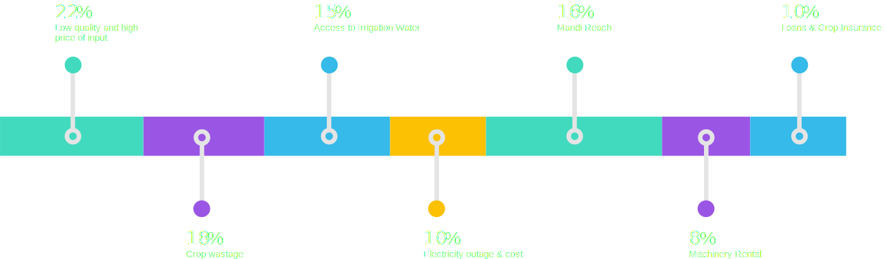

Agricultural development is one of the most powerful tools to end poverty, boost shared prosperity and feed a projected 9.7 billion people by 2050.
Growth in the agriculture sector is 2 to 4 times more effective in raising incomes among the poorest compared to other sectors.
Agriculture in Pakistan
Top challenges faced by farmers
BEYTHAK GOALS
Digital platform to provide a comprehensive eco-system that enables the farmer to improve livelihood through various integrated services available through a comprehensive partner network
INTEGRATED PORTFOLIO OF SERVICES LIKE EXPERT ADVISORY, AGRI MANDI, LOGISTICS SUPPORT, TAILORED FINANCING AND CUSTOMER REACH WILL HELP FARMER INCREASE HIS YIELD AND THUS HIS LIVELIHOOD
LATEST ADVISORY, ACCESS TO PRECISION FARMING MACHINERY, MACHINERY AND EQUIPMENT RENTALS WILL HELP FARMERS TAKE ADVANTAGE OF LATEST TECHNIQUES TO INCREASE THEIR CROP OUTPUT AND REDUCE WASTAGE
PAKISTAN’S FIRST SOCIAL MEDIA ENGAGEMENT PLATFORM WHERE FARMERS CAN SHARE INSIGHTS, TECHNIQUES, ADVISORY, TIPS AND TOOLS WITH ANYONE AROUND THE NATION AND THE GLOBE SO THAT COLLECTIVELY ALL FARMERS CAN BENEFIT
TAILORED FINANCIAL AND INSURANCE INSTRUMENTS TO BE OFFERED TO FARMES BASED ON THEIR CROP LIFECYLE, FARM SIZE HODING AND OTHER DATA INSIGHTS SO THAT THE LENDER AND THE BORROWER MAY ENJOY AN OPTIMAL RELATIONSHIP AT VERY AFFORDABLE RATES
INCREASE IN AGRI OUTPUT HAS A DIRECT CORRELATION WITH GDP OF THE COUNTRY AND HELPS MOVE THE ECONOMIC CYCLE OF THE NATION WHILST CREATING EMPLOYMENT AND HELPING THE POORER SEGMENT OF THE SOCITY MOVE ABOVE THE POVERYT LINES
REDUCING WASTAGE THROUGH ACCESS TO TIMELY ADVISORY, MACHINERY RENTALS AND TAILORED FINANCING HELPS ENHANCE THE FOOD SECURITY AND THUS THE NATIONAL SECURITY OF THE COUNTRY
PLATFORM WILL BE USED FOR PROVIDING REMOTE EDUCATION TO THE FARMING SEGEMENT OF THE SOCIETY, ESPECIALLY WHERE SECONDARY AND HIGHER EDUCATION IS DIFFICULT TO ACCESS PHYSICALLY
AGRICULTURE IS A 71$BN ANNUAL MARKET PLACE. PLATFORM WILL GIVE ACCESS TO BUYERS AND SELLERS TO INTERACT, TRADE AND USE BEYTHAKS’ LOGISTIC PLATFORM TO TRANSACT AT THEIR DOORSTEP. THIS WILL BE A GIANT STEP IN HELPING FARMERS ACHIEVE A FAIR PRICE FOR THEIR PRODUCE, INTURN HELPING THEM WITH THEIR YIELD AND LIVELIHOOD
BEYTHAK FOCUS AREAS
Pakistan cannot achieve sustainable economic growth without a boost to its agricultural and rural productivity & work force
How are we addressing the problem
Building the first engagement based integrated digital platform for Agriculture 4.0.
THE PLATFORM
Building the first engagement based integrated digital platform for Agriculture 4.0
.svg) Social Engagement
Social Engagement
.svg) Advisory Services
Advisory Services
.svg) Marketplace & Farm Supplies
Marketplace & Farm Supplies

Chacha Jee
A character led Engagement model Capitalizing on the strength of a senior farmer and the community elder “Chacha” the engagement replicates the traditional communication style and norms to keep the farmers engaged.